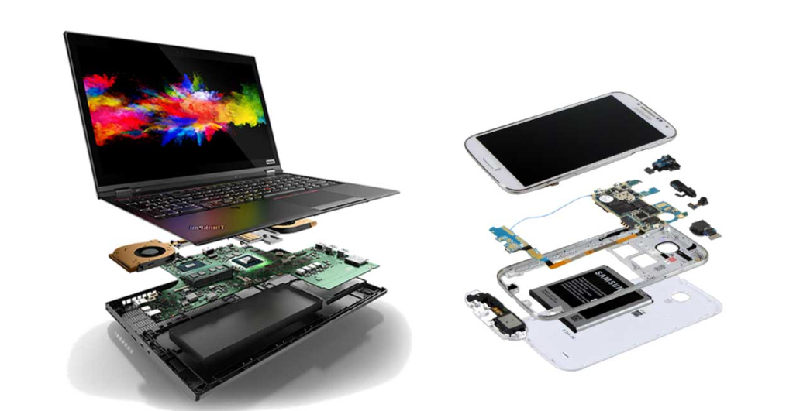

De fysieke laag bestaat uit alle onderdelen van een computer of digitaal apparaat die je kunt aanraken: de hardware.
[AFBEELDING UIT UIT COTEACH 2.1]

Fysieke laag
Welke hardware een apparaat heeft, hangt af van de functie van dat apparaat. Ook al hebben digitale apparaten verschillende hardwareonderdelen, is er één belangrijke overeenkomst. Ze hebben namelijk allemaal een manier om invoer te ontvangen, een processor en intern geheugen om informatie en instructies op te slaan en te verwerken, en een manier om uitvoer terug te geven. Dit principe wordt de Von Neumann-architectuur genoemd. Het is vernoemd naar de Hongaarse wis- en natuurkundige John von Neumann, die deze architectuur beschreef in 1945. We bekijken eerst hoe computers werken aan de hand van de Von Neumann-architectuur, daarna bekijken we de verschillende onderdelen waaruit een computer bestaat, waar ze voor dienen, en waar je op moet letten als je zelf een computer wilt samenstellen.
Leerdoelen: